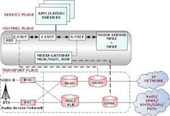

Message and flask
Final Group Project: Part 3
- Demo Day:
- 24 groups in total, each team will have 6 minutes to present using WebEx Online
- At least one team member needs to show up to present.
- April 23 & 28. The order will be randomly decided and announced after we introduce a random order web application example (example 44).
- Google Forms will be used to collect opinions from audience.
- README: team member names and emails
- Due...
How to store user input information
- Example 43
- PLACE LINK 43 HERE
- Dropzone.js library => simplify the drag and drop process
- Extension of Example 37
- Check if the folder exists, if not create one.
- os.path.exists
- A complex css file, not written by me but very powerful. Support image thumbnail
How do these map to web services?
- GET is used to get something from a web service
- POST is used to contribute something to a web service, to add new information
- PUT is used to update existing information
- DELETE is used to delete existing information
- Other actions may be used as well, these are the most common
Messaging Protocols

Common message protocols
- SOAP/XML (also called “pox”, “plain old xml”)
- JSON
| Index | Prev | Next |